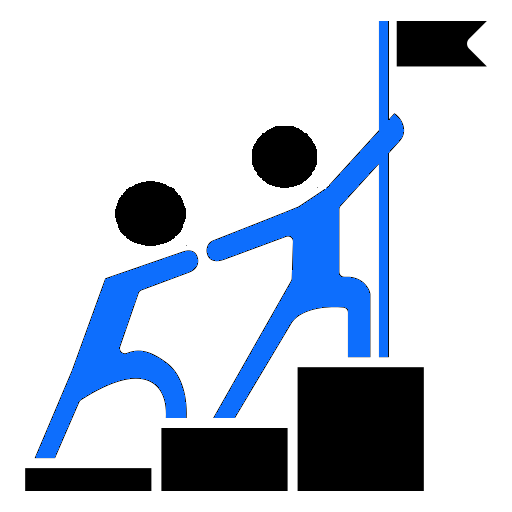

About Us
Better Future for Pakistan (BFFP) is a right based non-governmental, nonreligious & non-sectarian profitable organization established on 1st June 2013 and registered on 6th September, 2021 under partnership act 1932 in district East of Karachi, Sindh, Pakistan by a group of committed development workers. Present BFFP is governed by an autonomous Board of Directors (BOD). The board members are highly motivated and committed, and have taken many initiatives that support community members, especially vulnerable segments of the population build capacity to work for their own development and rights.
Better Future For Pakistan and all its subsidiary companies is a private company designing, managing and implementing national and international projects in development cooperation. During almost 2 years of experience, we have established ourselves as a recognized actor in the development and cooperation sector. We support our partners and clients with expertise, knowledge and capacities to meet their development objectives and ensure long lasting and sustainable results. Our expertise covers the full project life cycle, from feasibility studies, formative evaluations and concept development to design, planning, implementation, monitoring and evaluation of development interventions.
We support the 2030 Development Agenda and Sustainable Development Goals. This enables us to further integrate our thematic and technical expertise and align our interventions to the SDG targets. The good development practices that we have implemented through the years can be broadly disseminated.
We value interdisciplinary and integrated approaches through our core services: capacity development and training, technical assistance, consultancy and research. We believe that these services are complementary and provide the intended impact for development, seeking to bring effective and sustainable change at individual, organizational and environmental levels.
We began our activities in 2013 first in Karachi, then in overall province of Sindh.
Nowadays we are proud of being active in all over Pakistan.
Objective:
Health and Education Programs and female emancipation program
special educational programs for the rights issue,
the governance issue, gender issue women empowerment etc.
sessions and awareness for disadvantage community
of all members and staffs, partner organizations, community people, civil society will
form a unity, assistance, tolerance, community and brotherhood at every level.
Cross Cut themes of BFFP
Education:
.jpg)
.jpg)
.jpg)
Access to educational facilities in Karachi, especially in urban-slum areas of Karachi, there
are many
public and private sector schools in the settled town and the city center. Moreover it is
difficult for
children of many poor communities to access education from these schools because they do not have
adequate means of expense while living in difficult areas. Girls in particular have to
discontinue education
after primary level education because their parents cannot afford to send their daughters to high
schools near
areas due to security reason. Likewise, lack of public fares forces parents with low
economic status to
keep their children out of schools. Rather, Boys in particular discontinue education after secondary
level
education because lack of counseling on their institution, after secondary level education they don’t
know what they can do after this and they start working as labour, helper in small shop or in factory.
To
meet the needs of the education of the children BFFP want to run community schools in different
UC’s but this
purpose it is most that BFFP maintain resources and will build the capacity of teachers for
spreading
the quality education.
BFFP Education offers the following services to private and public training institutions, such as
training ministries and institutions:
Information OF BFF-Pakistan
To promote participatory, pro-poor, an attitudinal change in the minds of policy makers in creating a friendly environment, folk socially,economically and politically gender balanced development, and equal opportunities for all.
BFFP envisions an institutional process with the active involvement of all the stakeholders' rights form the conceptualization of planning and implementation phases, making the institutionalize process people oriented peoplecentered and gender sensitive.

Our business is built on the provision of four pillars of expertise which provide the services to meet the various needs and requirements of our clients.We apply formative design, implementation, results, impacts and sustainability of a project.